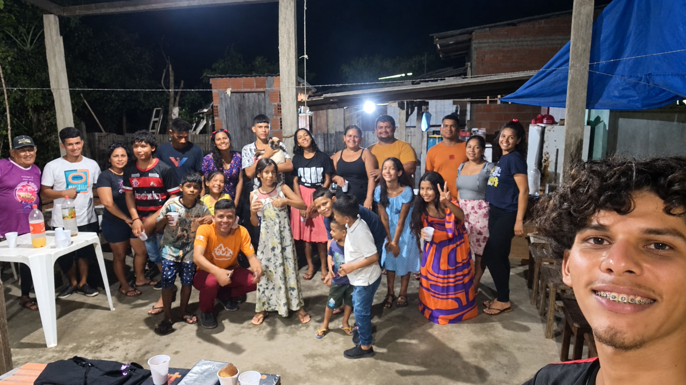

Um Ano em Missão
Depois de dois meses de preparo no Instituto de Missões Noroeste, passei oito meses no campo missionário em uma comunidade ribeirinha de Urucará, atuando como obreiro bíblico, compartilhando a Palavra e servindo à comunidade.
Preparo em missiologia, saúde, cozinha, horta e limpeza.